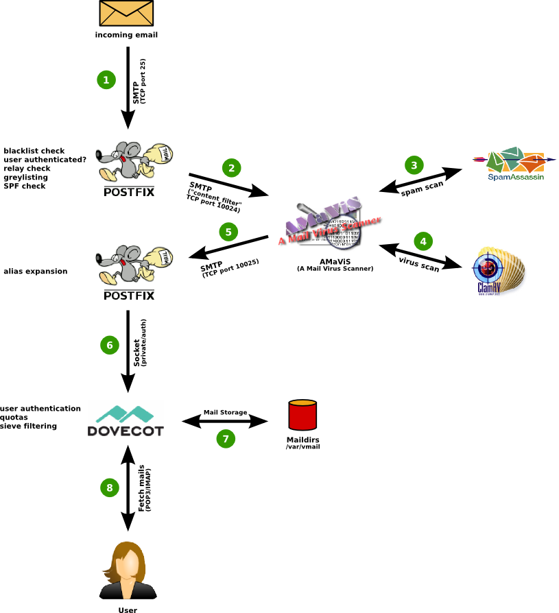
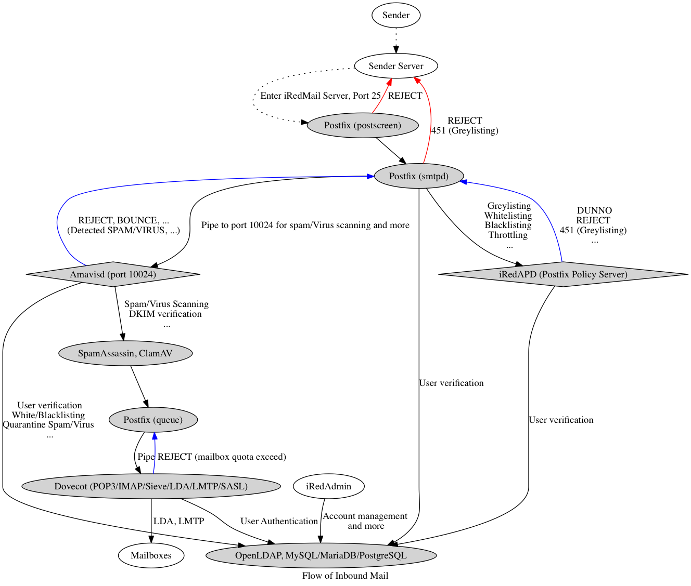
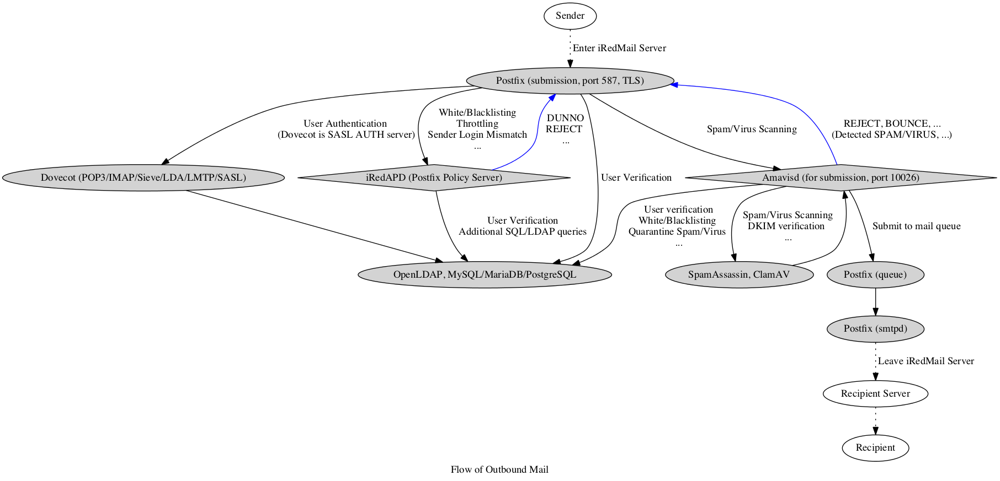

| Name | Comment | Command used to check software version |
|---|---|---|
| Postfix | Mail Transfer Agent (MTA) | postconf mail_version |
| Dovecot | POP3, IMAP and Managesieve server | dovecot --version |
| Apache, Nginx | Web server | apachectl -v nginx -v |
| OpenLDAP, ldapd(8) | LDAP server, used for storing mail accounts (optional). | slapd -V |
| MySQL, MariaDB, PostgreSQL | SQL server used to store application data. Could be used to store mail accounts too. | mysql --version psql -V |
| Amavisd-new | Interface between Postfix and SpamAssassin, ClamAV. it calls SpamAssassin and ClamAV for content-based spam/virus scanning. | amavisd-new -V |
| SpamAssassin | content-based spam scanner | spamassassin -V |
| ClamAV | Virus scanner | clamd -V |
| Cluebringer | A third-party postfix policy server | |
| Roundcube | Webmail (PHP) | |
| SOGo Groupware | A groupware which provides calendar (CalDAV), contact (CardDAV), tasks and ActiveSync services. | |
| Fail2ban | Scans log files and bans IPs that show the malicious signs -- too many password failures, seeking for exploits, etc. | fail2ban-server -V |
| Awstats | Apache and Postfix log analyzer | |
| iRedAPD | A very simple postfix policy server developed by iRedMail team | grep '__version__' /opt/iredapd/libs/__init__.py |



All documents are available in BitBucket repository, and published under Creative Commons license. If you found something wrong, please do contact us to fix it.